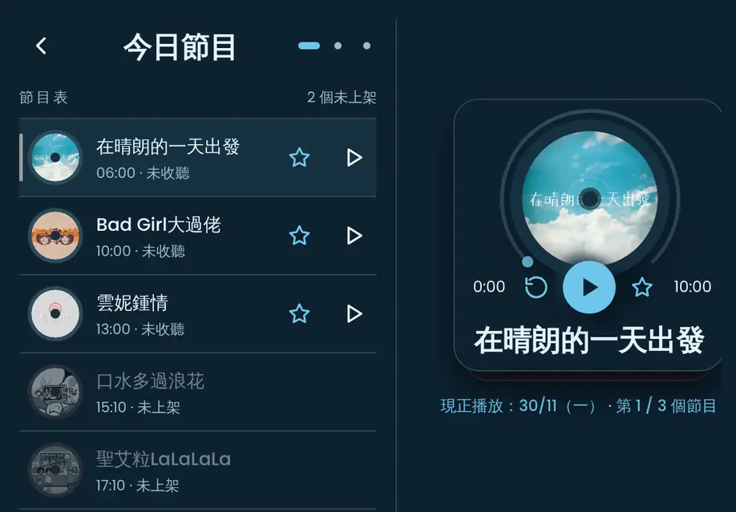
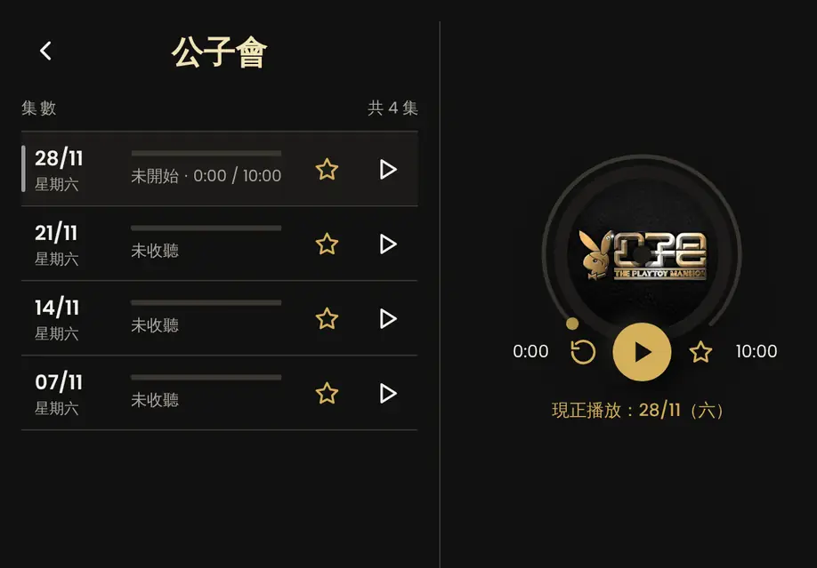
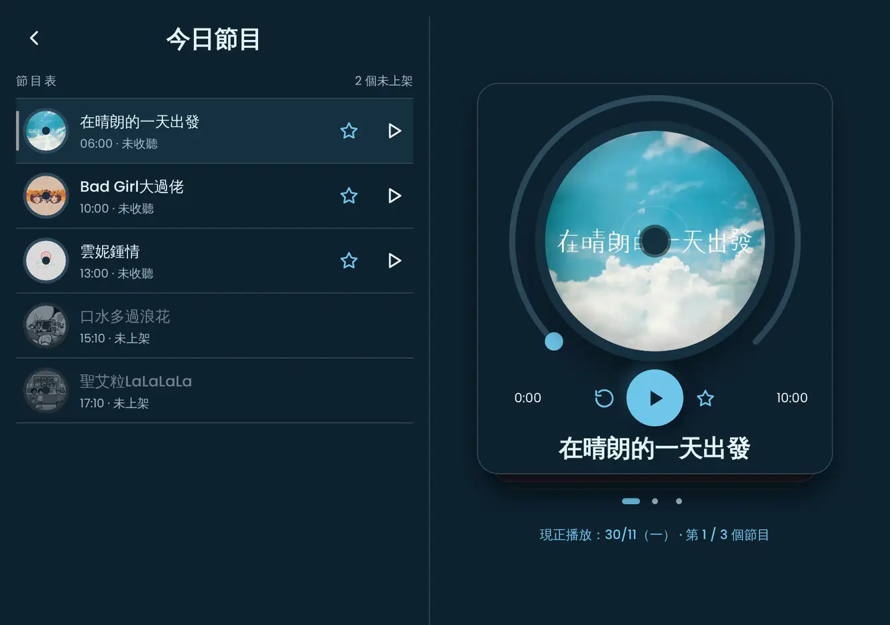
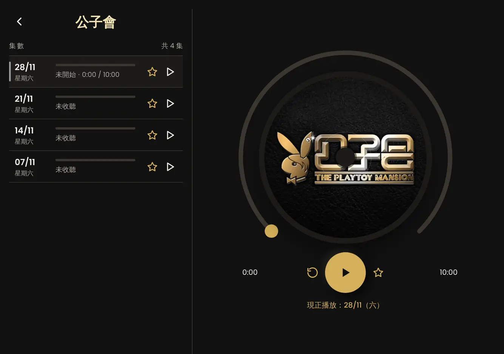
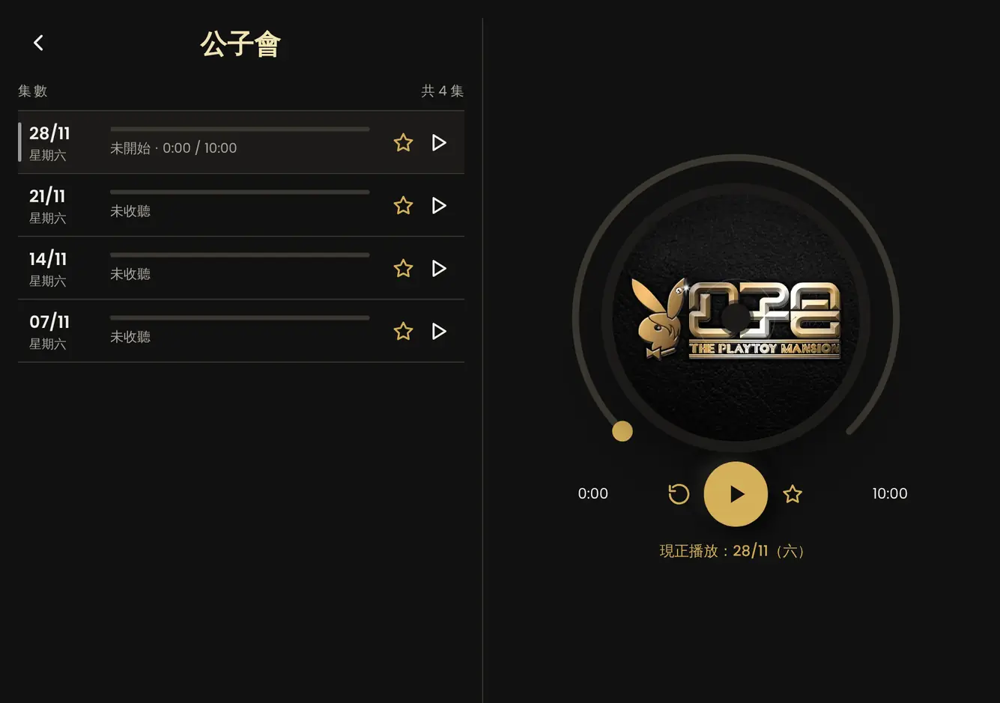
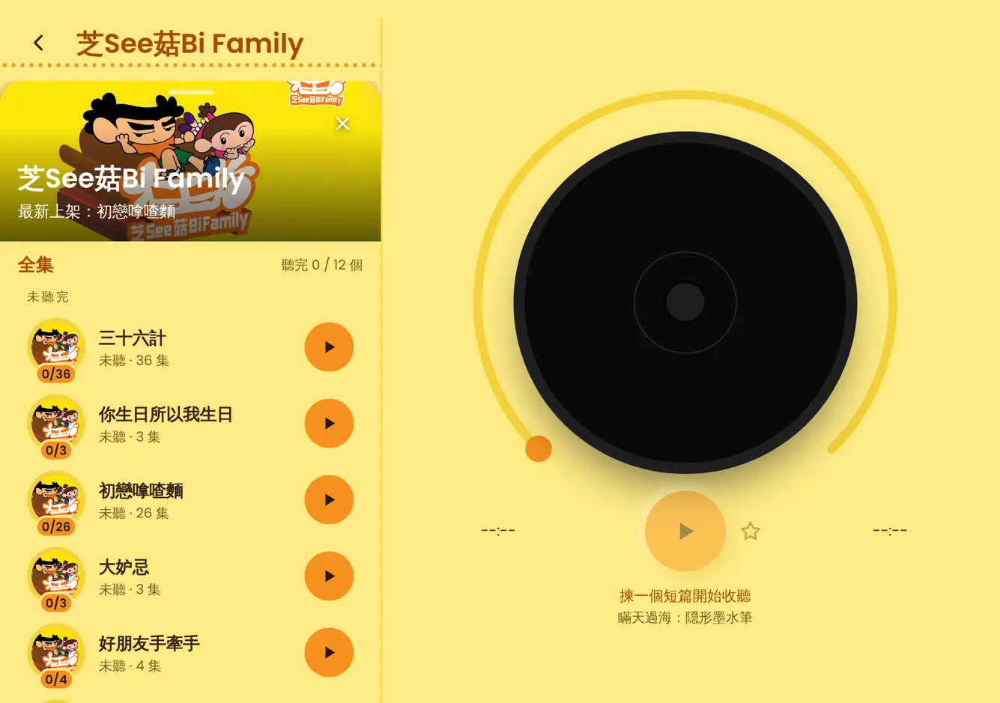
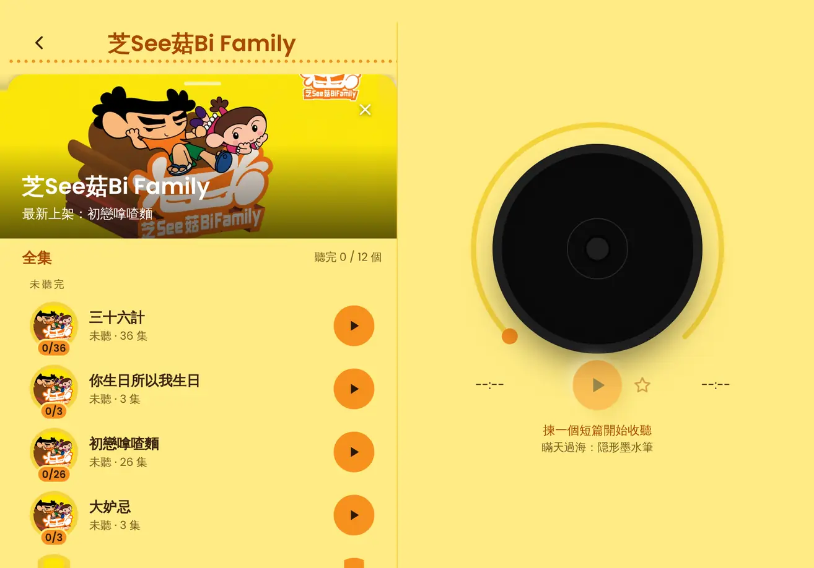
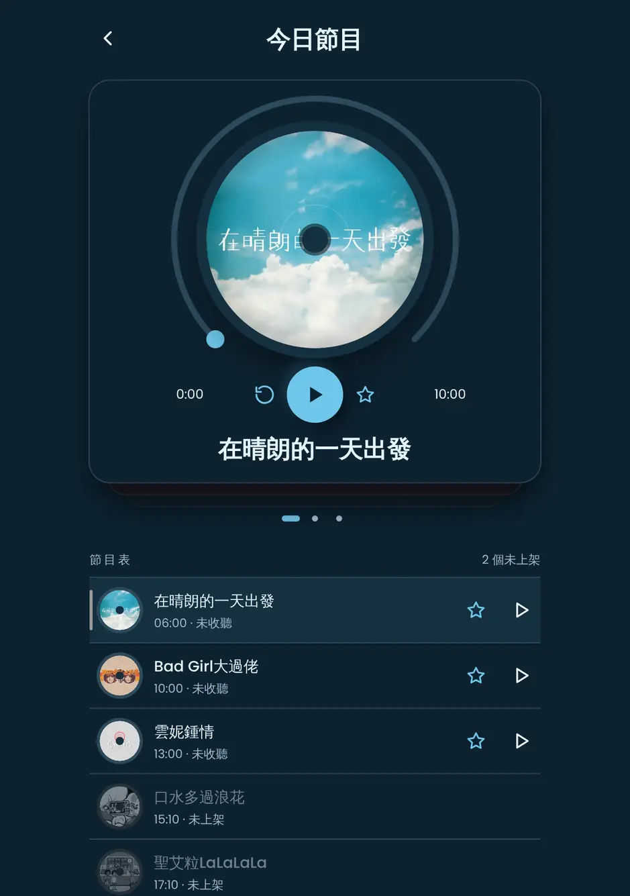
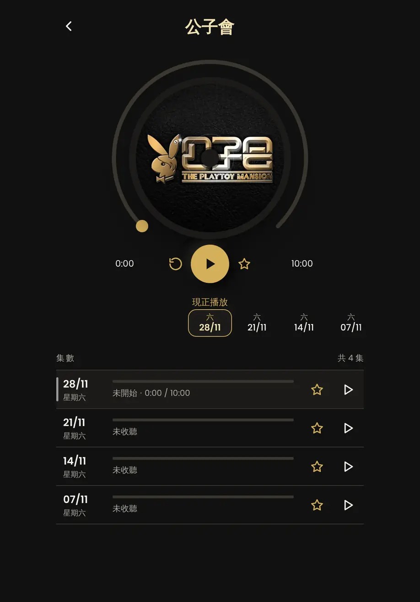
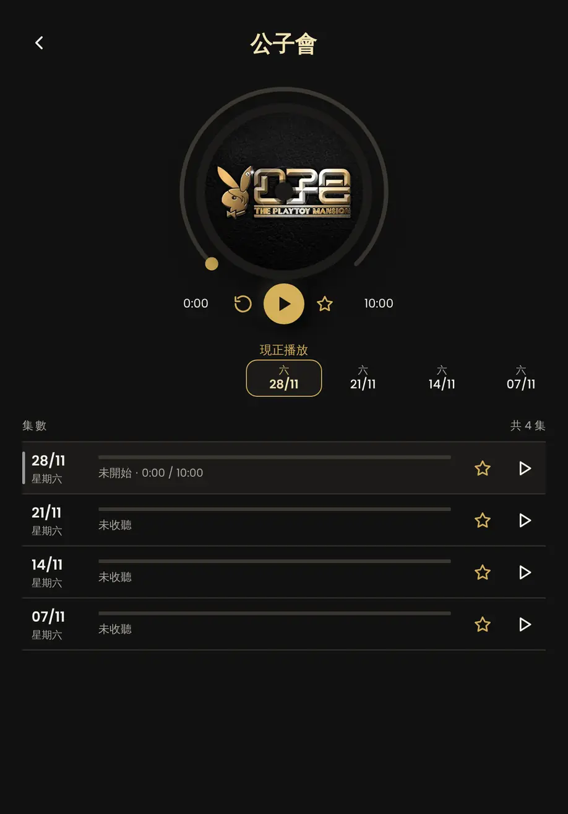

iPhone Duo 四種姿勢
P10 #10 preview gate。全部係真 app（v1.37.3，e2e 假資料）喺 Duo viewport 嘅截圖：「現狀」冇改任何嘢，「建議」係臨時改 layout token 影出嚟。 橙色虛線 = 摺位。確認之後先寫 code。
闔上・直
426 × 612（simulator 實測）／466 × 678（FAQ）- 版面唔改（你實測後決定）；3 欄建議取消。
- 新增：「我的收藏」入面「最近收聽」改矮。現狀固定 200px 高，喺 612px 高嘅外屏，收藏區得返約 100px，連集數行都睇唔到。
- 建議：最近收聽嘅高度跟內容，最高 200px，而且唔超過分頁區 40%；多過放得落就喺框入面捲。收藏區一定高過最近收聽。
- 呢項所有直版手機都受影響，唔止 Duo。
我的收藏：1 個最近收聽

我的收藏：4 個最近收聽
其餘四頁（466 × 678，唔改）

闔上・橫
612 × 426（simulator 實測）／678 × 466（FAQ）- 你實測啱：simulator 外屏打橫係 612px 闊，未夠橫版斷點（≥ 640px），所以跌返入直版，播放器同清單都好迫。
- 我上一版用 FAQ 嘅 678 × 466 影，啱啱過咗斷點，所以同你睇到嘅唔同。
- 建議：橫版斷點由 640px 降到 600px。612 同 678 兩個闊度都入手機打橫版面，版面本身唔改。
- 影響範圍：只多咗「打橫而且 600–639px 闊」嘅畫面轉橫版；iPhone SE 打橫（568px）照舊直版。
主頁
今日節目

節目頁


廣播劇頁
打開・橫
890 × 626- 現狀：闊橫版，清單佔 34–38%，播放器佔其餘。
- 問題：摺位喺正中（x = 445），而家條摺痕切過播放卡同唱片左邊。
- 建議 A：兩欄對齊摺位，各佔一半（左清單 / 節目格，右播放器），冇嘢跨過摺痕。
- 建議 B（可加）：主頁左邊加 rail，取代頂部「節目｜廣播劇」掣，節目格多一行高度。
主頁

主頁 + rail
今日節目

節目頁


廣播劇頁


打開・直
626 × 890- 現狀：仍然係手機直版，內容限 480px 闊，左右各留白 73px。
- 摺位打橫喺正中（y = 445）。
- 建議：用盡 626px 闊；主頁 3 欄，9 格一頁放晒。
- 節目頁 / 今日節目：播放器喺摺位上面、清單喺下面（正式版會將播放器撐到 445px；截圖未做呢步）。
主頁
今日節目

節目頁


廣播劇頁

待確認
| # | 問題 | 我嘅建議 |
|---|---|---|
| Q1 | Viewport 尺寸：FAQ（890 × 626、466 × 678）同 simulator 實測（876 × 612、426 × 612）唔同。 | 已定：兩組都要啱。e2e 兩組都測；橫版斷點降到 600px。 |
| Q2 | 闔上・直主頁轉 3 欄？ | 已定：唔改。 |
| Q3 | 打開・橫：A 淨係對齊摺位，定 B 加埋左邊 rail？ | A。Rail 令右欄唔再對正摺位，而且主頁得兩三個分類，得益細。 |
| Q4 | 打開・直：用盡全闊 + 主頁 3 欄，播放器喺摺位上、清單喺下？ | 做。 |
| Q5 | Simulator 仲有 Seated（半開放枱）同 Standing（帳篷）兩種姿勢，做唔做？ | v2.0.0 唔另外做：Seated 上半屏啱啱係「打開・直」摺位以上嗰截，Standing 用外屏 = 闔上・橫。 |
| Q6 | P10 入面先做 #10（Duo）定 9a（HomeView square）？ | 先 #10：只改 token 同斷點，風險細；9a 要新 layout mode。 |
| Q7 | 「最近收聽」改矮同「斷點降到 600px」唔使等 v2.0.0，要唔要先喺 1.x 出？ | 要。兩項都細、而家嘅手機已經受惠；Q3、Q4 先留喺 v2.0.0。 |
- 打開・直「建議」主頁 3 欄截圖漏咗最尾嘅「今日節目」格，係臨時 hack 嘅副作用；正式版會有 9 格。
- Rail 概念圖嘅 icon、位置未定稿，節目格比例亦未調。
- 冇真機：摺位位置假設喺正中，Safari 喺 Duo 有冇安全區 / 摺位 API 未驗證。